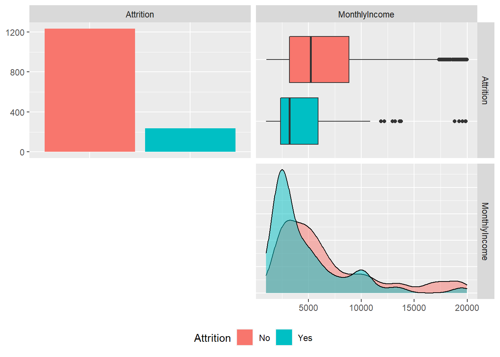
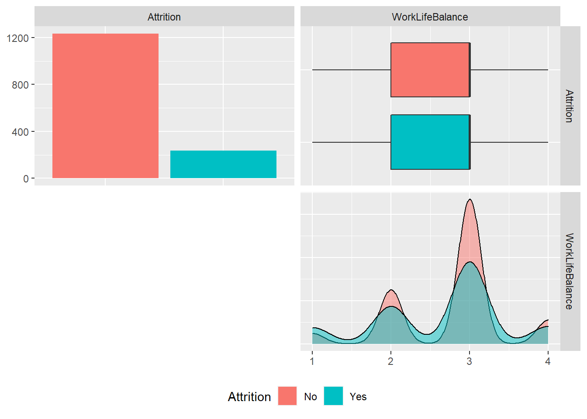
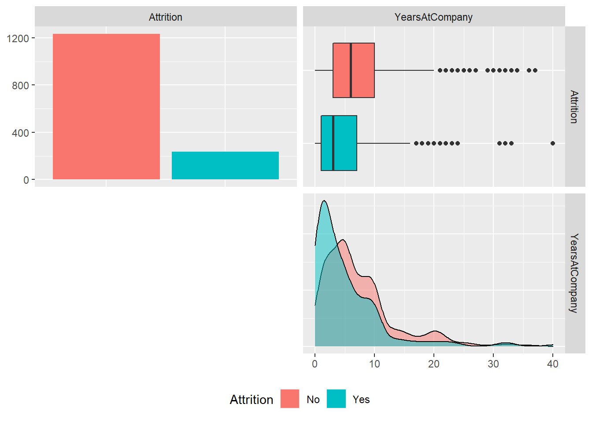

03 Automated Machine Learning with H20 ONE and TWO
2020-11-05
1 Libraries
Load the following libraries.
library(h2o)
library(tidyverse)
library(readxl)
library(skimr)
library(GGally)
library(rsample)
library(recipes)
library(PerformanceAnalytics) # for skewers
library(rpart.plot)2 Challenge
employee_attrition_tbl <- read_csv("datasets-1067-1925-WA_Fn-UseC_-HR-Employee-Attrition.csv")2.1 Helper function
plot_ggpairs <- function(data, color = NULL, density_alpha = 0.5) {
#
color_expr <- enquo(color)
if (rlang::quo_is_null(color_expr)) {
g <- data %>%
ggpairs(lower = "blank")
} else {
color_name <- quo_name(color_expr)
g <- data %>%
ggpairs(mapping = aes_string(color = color_name),
lower = "blank", legend = 1,
diag = list(continuous = wrap("densityDiag",
alpha = density_alpha))) +
theme(legend.position = "bottom")
}
return(g)
}2.2 Number One
employee_attrition_tbl %>%
select(Attrition, contains("income")) %>%
plot_ggpairs(Attrition)
#The answer is C ##Number Two
employee_attrition_tbl %>%
select(Attrition, contains("PercentSalaryHike")) %>%
plot_ggpairs(Attrition)
#The answer is D2.3 Number Three
employee_attrition_tbl %>%
select(Attrition, contains("StockOptionLevel")) %>%
plot_ggpairs(Attrition)
#The answer is B2.4 Number Four
employee_attrition_tbl %>%
select(Attrition, contains("EnvironmentSatisfaction")) %>%
plot_ggpairs(Attrition)
#The answer is A2.5 Number Five
employee_attrition_tbl %>%
select(Attrition, contains("WorkLifeBalance")) %>%
plot_ggpairs(Attrition)
#The answer is B2.6 Number Six
employee_attrition_tbl %>%
select(Attrition, contains("JobInvolvement")) %>%
plot_ggpairs(Attrition)
#The answer is A2.7 Number Seven
employee_attrition_tbl %>%
select(Attrition, contains("OverTime")) %>%
plot_ggpairs(Attrition)
#The answer is B2.8 Number Eight
employee_attrition_tbl %>%
select(Attrition, contains("TrainingTimesLastYear")) %>%
plot_ggpairs(Attrition)#The answer is B2.9 Number Nine
employee_attrition_tbl %>%
select(Attrition, contains("YearsAtCompany")) %>%
plot_ggpairs(Attrition)
#The answer is B2.10 Number Ten
employee_attrition_tbl %>%
select(Attrition, contains("YearsSinceLastPromotion")) %>%
plot_ggpairs(Attrition)
#The answer is C3 Second challenge
product_backorders_tbl <- read_csv("product_backorders.csv")3.1 Split into test and train
set.seed(seed = 1113)
split_obj <- rsample::initial_split(product_backorders_tbl, prop = 0.85)3.2 Assign training and test data
train_readable_tbl<- training(split_obj)
test_readable_tbl <- testing(split_obj) recipe_obj <- recipe( went_on_backorder~., data = train_readable_tbl) %>%
step_zv(all_predictors()) %>%
prep()
train_tbl <- bake(recipe_obj, new_data = train_readable_tbl)
test_tbl <- bake(recipe_obj, new_data = test_readable_tbl)3.3 set the predictor names
predictors <- c("national_inv", "lead_time", "forecast_3_month", "sales_3_month")
##specify the response
response <- "went_on_backorder"
h2o.init()## Connection successful!
##
## R is connected to the H2O cluster:
## H2O cluster uptime: 13 minutes 39 seconds
## H2O cluster timezone: Europe/Berlin
## H2O data parsing timezone: UTC
## H2O cluster version: 3.32.0.1
## H2O cluster version age: 2 months and 30 days
## H2O cluster name: H2O_started_from_R_ahmed_cgv301
## H2O cluster total nodes: 1
## H2O cluster total memory: 1.91 GB
## H2O cluster total cores: 4
## H2O cluster allowed cores: 4
## H2O cluster healthy: TRUE
## H2O Connection ip: localhost
## H2O Connection port: 54321
## H2O Connection proxy: NA
## H2O Internal Security: FALSE
## H2O API Extensions: Amazon S3, Algos, AutoML, Core V3, TargetEncoder, Core V4
## R Version: R version 4.0.3 (2020-10-10)3.4 Split data into a training and a validation data frame
# Setting the seed is just for reproducability
split_h2o <- h2o.splitFrame(as.h2o(train_tbl), ratios = c(0.85), seed = 1234)##
|
| | 0%
|
|======================================================================| 100% train_h2o <- split_h2o[[1]]
valid_h2o <- split_h2o[[2]]
test_h2o <- as.h2o(test_tbl)##
|
| | 0%
|
|======================================================================| 100%3.5 Set the target and predictors
y <- response
x <- setdiff(names(train_h2o), y)
automl_models_h2o <- h2o.automl(
x = x,
y = y,
training_frame = train_h2o,
validation_frame = valid_h2o,
leaderboard_frame = test_h2o,
max_runtime_secs = 15,
nfolds = 5
)##
|
| | 0%
|
|== | 3%
## 22:48:19.861: User specified a validation frame with cross-validation still enabled. Please note that the models will still be validated using cross-validation only, the validation frame will be used to provide purely informative validation metrics on the trained models.
## 22:48:19.863: AutoML: XGBoost is not available; skipping it.
|
|==================== | 28%
|
|================================== | 48%
|
|================================================ | 69%
|
|======================================================== | 80%
|
|======================================================================| 100%3.6 Prepare model
automl_models_h2o@leaderboard## model_id auc logloss
## 1 StackedEnsemble_AllModels_AutoML_20210107_224819 0.9394558 0.2131051
## 2 StackedEnsemble_BestOfFamily_AutoML_20210107_224819 0.9311959 0.2218356
## 3 GBM_4_AutoML_20210107_224819 0.9190436 0.3116600
## 4 GBM_5_AutoML_20210107_224819 0.8828485 0.3373774
## 5 GBM_grid__1_AutoML_20210107_224819_model_1 0.8777214 0.2930852
## 6 XRT_1_AutoML_20210107_224819 0.7794637 1.9771909
## aucpr mean_per_class_error rmse mse
## 1 0.6552421 0.1641491 0.2514850 0.06324468
## 2 0.6463268 0.1581397 0.2542267 0.06463123
## 3 0.6236841 0.1768081 0.3010432 0.09062698
## 4 0.4439764 0.2162209 0.3129217 0.09791999
## 5 0.5136269 0.2503596 0.2915083 0.08497709
## 6 0.3757676 0.3096239 0.3155025 0.09954183
##
## [12 rows x 7 columns] Model<-automl_models_h2o@leader
h2o.saveModel(Model,path = "ml_journal-Automated_Machine_learning_2_model")## [1] "D:\\Mechatronics_master\\Third semester\\Data science\\Machine learning\\ml_journal-AhmedShaheen-MEC\\ml_journal-Automated_Machine_learning_2_model\\StackedEnsemble_AllModels_AutoML_20210107_224819"